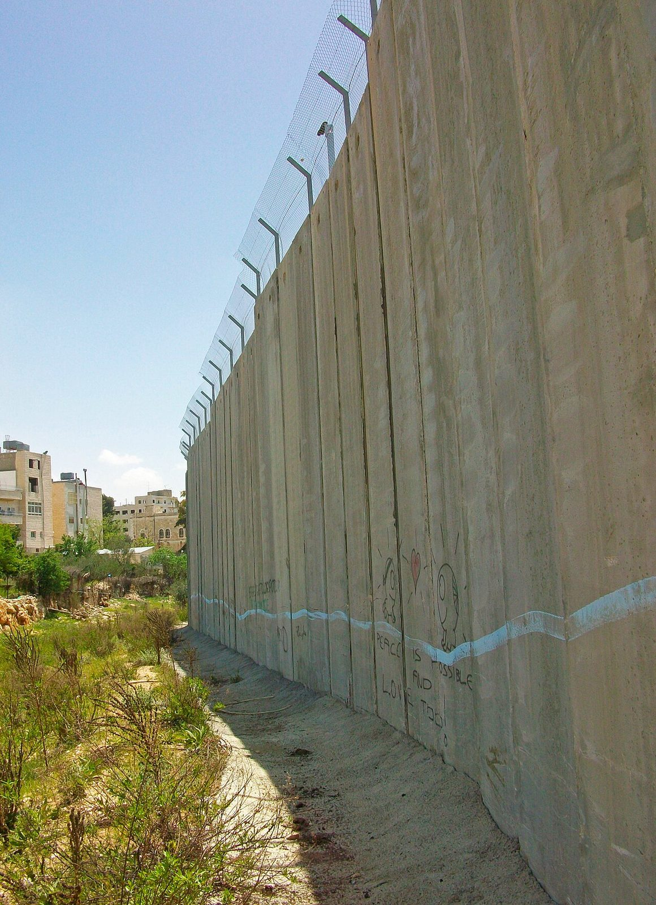
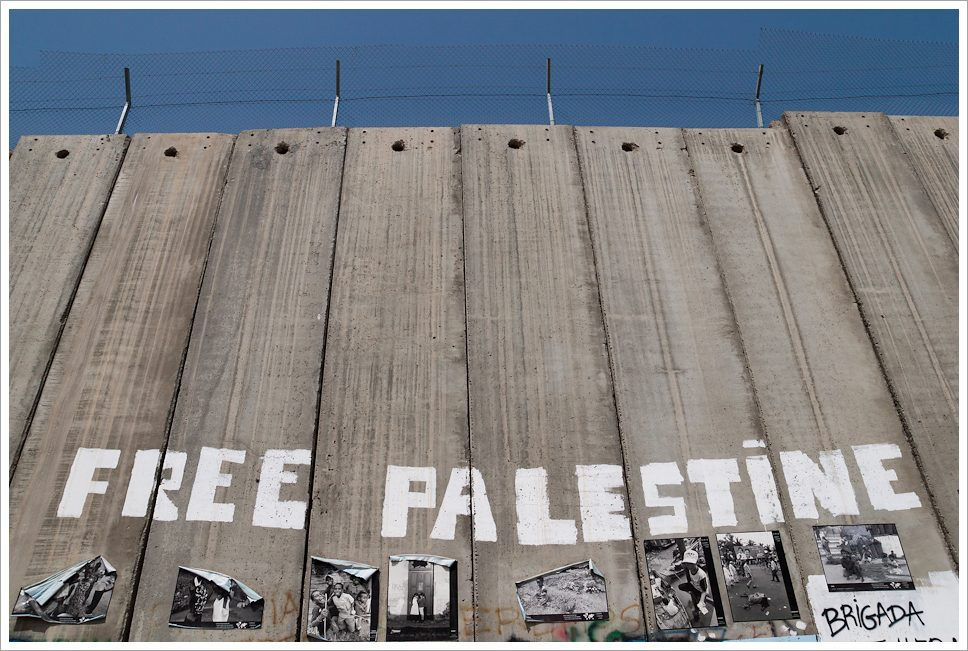

Die beiden Befunde dieser Seite
Diese Seite beantwortet die Frage für jeden Krieg einzeln, und die Antworten fallen nicht immer zugunsten derselben Seite aus:
- 1967 führte Israel den ersten Schlag — unstrittig, am Morgen des 5. Juni. Bemerkenswert ist, wer das bestätigt hat: Ministerpräsident Menachem Begin 1982 „Wir beschlossen, ihn anzugreifen“, Generalstabschef Jitzchak Rabin 1968 „Ich glaube nicht, dass Nasser Krieg wollte“, Außenminister Abba Eban „Er wollte einen Sieg ohne Krieg“. Eine unmittelbare ägyptische Angriffsabsicht ist historisch nicht belegt — und zugleich hatte Nasser mit Tiran-Sperrung, Aufmarsch und Vernichtungsrhetorik eine Lage geschaffen, die Israels Führung als existenziell wertete. Beides gehört zur Wahrheit.
- 1973 griffen Ägypten und Syrien an — am 6. Oktober, am Jom Kippur. Auch das steht hier so.
Das ist eine offengelegte redaktionelle Entscheidung, keine getarnte Tatsachenbehauptung — und sie stützt sich auf eine benannte Beweislage:
Die Gegenstimmen stehen vollständig daneben, nicht im Kleingedruckten: über 500 Wissenschaftler widersprachen der IAGS-Resolution, darunter Benny Morris und der verstorbene Yehuda Bauer. Strittig ist unter Fachleuten nicht das Ausmaß der Zerstörung, sondern der Nachweis der besonderen Zerstörungsabsicht. Die vollständige Herleitung mit allen Namen und Belegen ↓
1967, 1973 und Libanon 1982
Jeder der drei Kriege lässt sich hier als Ganzes aufklappen – mit Vorgeschichte, Verlauf, Opferzahlen und Folgen; die Vertiefungen im Inneren bleiben als eigene Aufklapp-Karten erhalten.
Die Massaker-Chronik: jetzt eine eigene Seite
Die vollständige Chronik der dokumentierten Massaker an Palästinensern ist von dieser Seite auf eine eigene Seite umgezogen – und beginnt dort nicht mehr erst 1947, sondern in der britischen Mandatszeit: von den Jaffa-Unruhen 1921 über die Niederschlagung des Arabischen Aufstands 1936–1939 und die Irgun-Bombenkampagne bis zu den Gazakriegen. Alle Einträge nennen die Täter präzise und Opferzahlen als Spanne mit Zuschreibung; Massaker und Terroranschläge an Juden und Israelis werden dort ebenso benannt.
Massaker-Chronik 1920–2026
Alle Einträge mit Tätern, Opferspannen und Quellen – einschließlich der Mandatszeit vor der Nakba und der Brunnenvergiftungs-Kampagne „Cast Thy Bread“.
Genozid in Gaza: die Einordnung dieser Seite
Diese Seite nennt, was in Gaza geschieht, einen Genozid. Das ist keine beiläufige Wortwahl, sondern eine begründete redaktionelle Entscheidung, gestützt auf die unten dokumentierte Beweislage: die Feststellung der UN-Untersuchungskommission, das laufende IGH-Verfahren, die Resolution der Fachgesellschaft für Genozidforschung und die Einschätzungen benannter Genozidforscher, darunter israelische und jüdische Wissenschaftler. Die Völkermordkonvention wurde geschaffen, um genozidale Handlungen zu erkennen und ihnen entgegenzutreten, nicht erst nach ihrem Abschluss zu benennen. Diese Seite legt die Entscheidung offen als redaktionelle Position dar, statt sie als vorgeblich neutrale Tatsachenfeststellung zu tarnen — und nennt vollständig auch die wissenschaftlichen Gegenstimmen. Verantwortlich für diese Einordnung ist die Betreiberin dieser Seite.
Rechtlicher Maßstab
Grundlage jeder seriösen Einordnung ist die UN-Völkermordkonvention von 1948 (geprägt von Raphael Lemkin). Art. II definiert Genozid als Handlungen „in der Absicht, eine nationale, ethnische, rassische oder religiöse Gruppe als solche ganz oder teilweise zu zerstören“ — darunter Tötung, schwere Schäden, und die vorsätzliche Auferlegung von Lebensbedingungen, die auf die Zerstörung der Gruppe gerichtet sind. Der juristische Kern des Streits ist der Nachweis der besonderen Zerstörungsabsicht (dolus specialis).
Omer Bartov (Brown University) — die zentrale Stimme
Omer Bartov (geb. 1954 in Israel, ehemaliger IDF-Soldat) ist Samuel-Pisar-Professor für Holocaust- und Genozidforschung an der Brown University und gilt als einer der führenden Holocaust-Forscher weltweit (Standardwerke u. a. Hitler's Army, Anatomy of a Genocide über Buczacz).
- August 2024 (Essay im Guardian nach einem Israel-Besuch): Bartov kam zum Schluss, dass Israels Vorgehen in Gaza — spätestens seit dem Angriff auf Rafah im Mai 2024 — genozidale Züge trage.
- 15. Juli 2025, New York Times: „I'm a Genocide Scholar. I Know It When I See It.“ — In dem ~3.500-Wörter-Essay legt Bartov dar, dass er zu Kriegsbeginn NICHT von Genozid sprach, seine Einschätzung aber anhand der Kriegsführung und der dokumentierten Zerstörung revidieren musste: Ziel sei, der Gruppe die Möglichkeit zu nehmen, sich als Gruppe wieder zu konstituieren — „genau das versucht Israel zu tun“.
- 2025, wissenschaftlich ausgearbeitet in: Bartov, „Israel's war in Gaza and the question of genocide“, Journal of Genocide Research / SAGE (peer-reviewed).
Bartov betont dabei stets zweierlei: Der Hamas-Angriff vom 7. Oktober 2023 war ein Massaker mit Kriegsverbrechen — und die Einstufung israelischen Handelns als Genozid ist eine juristisch-wissenschaftliche Feststellung, kein Urteil über „die Israelis“ oder gar „die Juden“.
Die Fachgesellschaft: IAGS-Resolution vom 31. August 2025
Die International Association of Genocide Scholars (IAGS) — die größte Fachgesellschaft der Disziplin, rund 500 Mitglieder — nahm am 31. August 2025 mit 86 % Zustimmung eine Resolution an, wonach die rechtlichen Kriterien erfüllt sind, dass Israel in Gaza Genozid begeht (Original-PDF: genocidescholars.org). Das ist die gewichtigste kollektive Stellungnahme der Fachwissenschaft.
Weitere Forscherinnen und Forscher, die von Genozid sprechen
- Raz Segal (Stockton University, Holocaust- und Genozidforschung): sprach bereits im Oktober 2023 von einem „textbook case of genocide“ (Jewish Currents) — die früheste prominente Einstufung.
- Amos Goldberg (Hebräische Universität Jerusalem, Holocaust-Forschung): Essay „Yes, it is genocide“ (April 2024) — besonders gewichtig, weil aus Israel selbst.
- Martin Shaw (Sussex, Autor von What is Genocide?), William Schabas (Middlesex, führender Völkerstrafrechtler, Autor des Standardkommentars zur Genozid-Konvention), Melanie O'Brien (Präsidentin der IAGS, Völkerrechtlerin) — alle drei ordnen das Vorgehen als Genozid bzw. als die Kriterien erfüllend ein.
- A. Dirk Moses (CUNY, Herausgeber Journal of Genocide Research, Autor The Problems of Genocide): differenzierte Position — er analysiert die Zerstörung Gazas im Rahmen seiner Theorie „permanenter Sicherheit“ und kritisiert zugleich die Engführung der Genozid-Debatte; wichtig als methodische Stimme.
Institutionelle Untersuchungen (keine Politiker, sondern Gremien mit Beweisverfahren)
- Internationaler Gerichtshof (IGH), Verfahren Südafrika ./. Israel: Beschluss vom 26. Januar 2024 — ein „plausibles Risiko“ irreparabler Schäden nach der Genozid-Konvention; verbindliche vorläufige Maßnahmen (weitere Beschlüsse März und Mai 2024, u. a. zu Rafah). Das Hauptsacheverfahren läuft (Stand August 2026) — und es wird lange laufen: Klageschrift Südafrikas Oktober 2024 · Israels Gegenschrift nach zwei Fristverlängerungen im März 2026 · Beschluss vom 21. Mai 2026: Südafrikas Replik bis 22. November 2027, Israels Duplik bis 22. Mai 2029. Ein Urteil in der Hauptsache ist vor Anfang der 2030er Jahre kaum zu erwarten. Wer also sagt, „der IGH hat nichts festgestellt“, sagt vor allem etwas über die Verfahrensdauer — die vorläufigen Feststellungen von 2024 gelten unabhängig davon.
- UN-Untersuchungskommission (COI) unter Navi Pillay: stellte im September 2025 fest, dass Israel in Gaza Genozid begeht (vier von fünf Tatbestandshandlungen erfüllt). Sie hat diese Einstufung 2026 nicht zurückgenommen, sondern erweitert: Bericht an den Menschenrechtsrat am 9. Juni 2026, und am 23. Juni 2026 die Feststellung, israelische Behörden und Sicherheitskräfte hätten palästinensische Kinder gezielt angegriffen — gewertet als Genozid und Gräueltaten in Gaza sowie als Kriegsverbrechen im Westjordanland.
- Amnesty International (Dezember 2024, Bericht „'You Feel Like You Are Subhuman'“): Einstufung als Genozid.
- Human Rights Watch (Dezember 2024): „Acts of Genocide“ (gezielter Wasserentzug) und das Verbrechen der Ausrottung (extermination).
- B'Tselem und Physicians for Human Rights–Israel (Juli 2025, „Our Genocide“): erste israelische Menschenrechtsorganisationen mit dieser Einstufung.
- Francesca Albanese, UN-Sonderberichterstatterin (Bericht „Anatomy of a Genocide“, März 2024) — UN-Mandatsträgerin, als Quelle mit dieser Einordnung zu kennzeichnen.
Wissenschaftliche Gegenstimmen und Skeptiker
- Über 500 Unterzeichner — Rechtswissenschaftler, Holocaust-Forscher, ehemalige Ankläger — widersprachen der IAGS-Resolution in einem offenen Brief (Academic Engagement Network, 9. September 2025): Die Resolution verfehle den Intent-Nachweis und wende die Konvention politisch an.
- Benny Morris (Ben-Gurion-Universität, führender 1948-Historiker): lehnt die Genozid-Einstufung ab; er spricht von brutaler Kriegsführung gegen die Hamas, nicht von Zerstörungsabsicht gegen die Gruppe.
- Yehuda Bauer (Hebräische Universität, gestorben Oktober 2024, Doyen der Holocaust-Forschung): wies die Einstufung bis zuletzt zurück.
- Teile der israelischen Völkerrechts-Community argumentieren, die humanitäre Katastrophe belege Kriegsverbrechen und ggf. Verbrechen gegen die Menschlichkeit, aber keinen dolus specialis.
Bartovs Antwort auf diese Kritik (im NYT-Essay): Die Absicht müsse nicht in Geheimdokumenten gesucht werden — sie sei aus dem Muster der Kriegsführung und aus öffentlichen Äußerungen der Führung ablesbar.
Die Frage „Genozid ja/nein“ ist damit keine Randmeinung mehr, sondern eine Auseinandersetzung innerhalb der Fachwissenschaft — mit einer klaren Mehrheit und einer substanziellen Minderheit, die beim Nachweis der besonderen Zerstörungsabsicht widerspricht. Die redaktionelle Entscheidung dieser Seite, das Geschehen in Gaza einen Genozid zu nennen, steht mit ihrer Grundlage ganz oben auf dieser Seite — getroffen auf genau der Beweislage, die in diesem Kapitel Name für Name aufgeführt ist.
Sperranlage und Kontrollpunkte


Quellen dieser Seite
Kriege 1967/1973/1982
- Wilson Center: New Evidence on the Origins of the 1967 Arab-Israeli War (sowjetische Falschmeldung)
- US State Department, Office of the Historian: The 1967 Arab-Israeli War — Ursachen, Verlauf, Folgen
- Tom Segev: 1967 – Israel, the War and the Year that Transformed the Middle East (Begin-, Rabin-, Bentov-Zitate und interne israelische Debatte)
- Washington Report on Middle East Affairs: Begins Rede vom 8. August 1982 (National Defense College)
- UN-Sicherheitsrat: Resolution 242 (1967) — Originaltext
- BADIL Resource Center: From the 1948 Nakba to the 1967 Naksa (Vertriebenenzahlen)
- US State Department, Office of the Historian: The 1973 Arab-Israeli War — Verlauf und Folgen
- Bundeszentrale für politische Bildung: Vom Jom-Kippur-Krieg bis zum Libanon-Krieg
- Seth Anziska: Preventing Palestine (Princeton UP) – Kapitel zum Libanonkrieg 1982
- Washington Post (3.9.1982): War Casualties Put at 48,000 in Lebanon (An-Nahar-/Polizeizahlen)
- Palquest: Plan for the Departure from Lebanon of the PLO Leadership, Offices and Combatants in Beirut, 20.8.1982 (Originaldokument)
- UN-Sicherheitsrat: Resolution 425 (1978) — Originaltext (Operation Litani, Gründung UNIFIL)
- Amnesty International: Unlawful Killings During Operation Grapes of Wrath (Qana 1996, UN-Bericht van Kappen)
- UNIFIL (UN-Friedenstruppe): offizieller Hintergrundbericht (Sicherheitszone bis 2000, Rückzug)
Genozidforschung
- Omer Bartov: Israel's war in Gaza and the question of genocide (SAGE, peer-reviewed, 2025)
- IAGS Resolution on the Situation in Gaza (Original-PDF, August 2025)
- PBS NewsHour: Leading genocide scholars organization says Israel is committing genocide in Gaza
- Democracy Now: Interview mit Omer Bartov zum NYT-Essay (17.7.2025)
- Moment Magazine: Is It Genocide? Omer Bartov Sparks a Furor (Debattenüberblick)
- Gegenbrief von 500+ Wissenschaftlern gegen die IAGS-Resolution (AEN, 9.9.2025, PDF)
- Al Jazeera Inside Story: Will resolution on Gaza by genocide scholars make a difference?